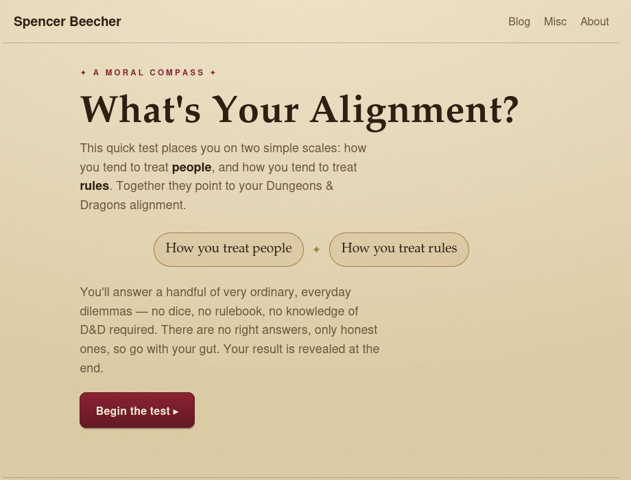

The alignment test asks you eight ordinary questions and puts you somewhere on the Dungeons & Dragons alignment grid, from Lawful Good to Chaotic Evil.

The thing I wanted to avoid was a quiz that only works if you already play D&D. So there are no dice in it, no spells, and nothing you need to have read. The questions are situations anybody has been in — a queue, a favour, a rule that is obviously stupid — and you pick what you would actually do.
Underneath it is two scales rather than nine boxes: how you treat people, and how you treat rules. The alignment falls out of where you land on both. It draws 8 questions from a bank of 14 and picks the next one based on your answers so far, so the questions you get are the ones that still separate the possibilities.
The result names your alignment, describes it, and gives you characters who share it.
One thing I changed after playing with it: the evil results needed better names. "Chaotic Evil" as a verdict on someone who answered eight honest questions is a bad end to a two-minute quiz, so the archetypes for those squares got friendlier wording. Same scoring, kinder label.
It is one HTML file, about 36 KB, with everything inside it.